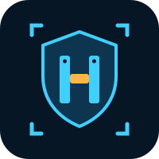

Hiersoft conçoit des logiciels pour le stockage réseau. Notre système Hiersoft NasOS transforme un PC ou un serveur en NAS complet : partages, sauvegardes, snapshots, applications et accès distant sécurisé.

Une entreprise française qui développe des solutions logicielles fiables, sobres et respectueuses de vos données : pas d'abonnement obligatoire, pas de dépendance à un cloud tiers.
Tout fonctionne sur votre matériel. L'accès distant passe par votre propre VPN.
Debian, ZFS, Btrfs, Samba, WireGuard : des briques robustes, utilisées dans les plus grands centres de données.
Installation guidée, assistant d'initialisation, interface en 5 langues, du particulier à la petite entreprise.
Un système de NAS dans l'esprit de ZimaOS pour la simplicité, avec la puissance de gestion du stockage de TrueNAS.
RAID1, RAID10, RAID-Z, compression, chiffrement, datasets, zvols, import de volumes existants.
Snapshots automatiques quotidiens, « Versions précédentes » sous Windows, corbeille des partages.
SMB (Windows, macOS, Time Machine), NFS, iSCSI et liens de partage sécurisés.
Catalogue d'applications Docker installables en un clic, réglables comme sur ZimaOS.
VPN WireGuard intégré avec QR code, DNS dynamique, certificat Let's Encrypt automatique.
Santé des disques (SMART), alertes par e-mail, scrub, mises à jour de sécurité automatiques.
Fichiers, lecture vidéo et musique dans le navigateur, avec conversion à la volée.
Pare-feu, HTTPS, limitation des tentatives de connexion, disque système en RAID1 possible.
NasOS s'installe sur un PC ou un serveur x86-64, depuis une clé USB.
| Minimum | Recommandé | |
|---|---|---|
| Processeur | x86-64, 2 cœurs | 4 cœurs ou plus |
| Mémoire (Btrfs) | 4 Go | 8 Go |
| Mémoire (ZFS) | 4 Go | 8 Go, 16 Go avec beaucoup d'applications |
| Disque système | 32 Go (SSD conseillé) | 64 Go ; 128 Go pour y installer les applications |
| Démarrage | BIOS ou UEFI, Secure Boot désactivé | |
| Réseau | Ethernet 1 Gbit/s | 2,5 Gbit/s ou plus |
Une question, une démonstration, un projet d'installation ? Écrivez-nous.
hiersoft@salade.io